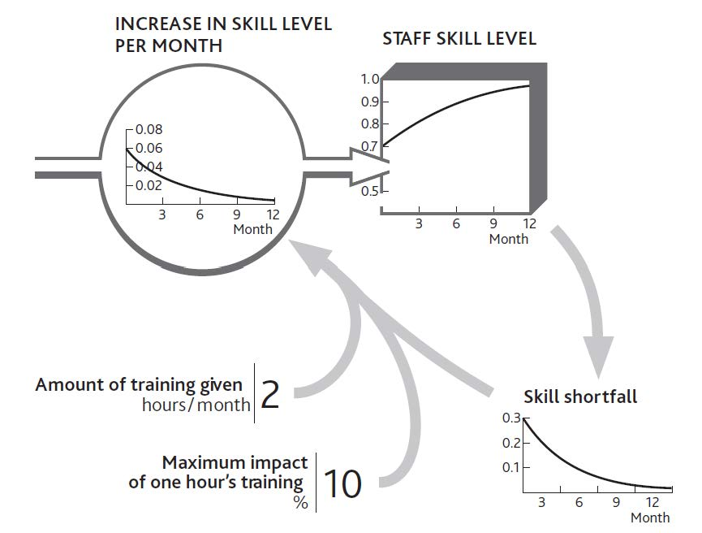
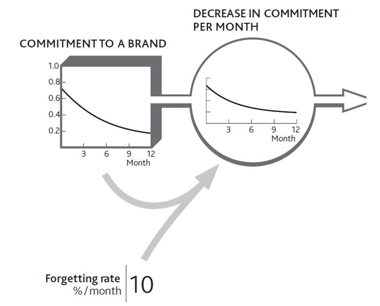
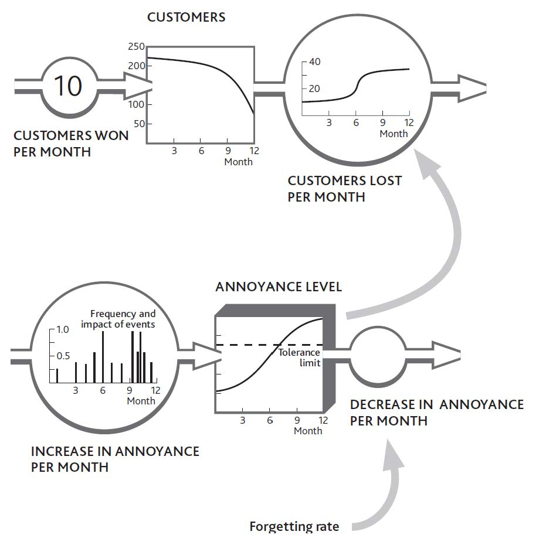

Just like the tangible resources discussed in earlier chapters, intangibles fill and drain away through time; that is what makes them resources. So once again we need to understand both how quickly this is happening and what is driving the flows. Reputation, for example, is raised by the frequency with which satisfied people tell others; staff motivation grows at a rate driven by events that make people feel good about working harder. The more significant and frequent these events and experiences, the more the attitude is developed.
This buildup of positive commitment cannot go on for ever. A look at the service firm’s early situation shows a reputation rating of nearly 1, and a limited buildup of morale among the developers. This is hardly surprising; there is only so much “feeling” you can push into people!
Managers can find ways to influence both the inflow and outflow of intangibles. Positive leadership behaviors, for example, encourage positive feelings among staff; confident statements about an organization’s performance build commitment among investors or donors; and so on.
Skills training is a useful example, since it often comes with clear measurements (Tovey, 1994). Indeed, in many sectors, skills are routinely measured to ensure compliance with required standards. Figure 8.5 "Building an Intangible Resource: Staff Skills" shows skills being built up by hours of training time but reaching limits in the trainees’ ability to learn more. The framework distinguishes between the management action (amount of training given) and the impact it has on the resource that concerns us (increase in current skill level). We need this distinction in order to identify whether the effort is being effective. Indeed, we need to have measures for both items.
Although this may seem a rather mechanical view of how training works, something like this process goes on in real situations, and it does at least provide a way of making evidence-based judgments about management decisions. In practical cases, skills audits provide useful starting information and a firm’s actual experience in training efforts yields good estimates of training impacts.
There are similarities, too, between the deterioration of tangible resources mentioned in Chapter 3 "Resources and Bathtub Behavior" and the decay of intangible resources. Skill levels drop if not maintained by practice or repeated training; employees can lose their enthusiasm for a job; donors may lose their commitment to supporting a charitable or political cause.
It is hardly surprising to see brands that are universally recognized and understood continuing to spend heavily on advertising. It is not just a matter of persuading newcomers to the market to become committed to the brand, it is also vital to stop those who are already committed from losing their enthusiasm (Figure 8.6 "Decay in Commitment to a Brand").
Figure 8.5 Building an Intangible Resource: Staff Skills
Consider for a moment how reliable your current car has been since first you owned it (or consider a friend’s car if you do not own one). How many times has it broken down in the past 30,000 miles? Twice maybe, or once, or perhaps not at all? Forty years ago, such reliability would have been rare, and your car would have been remarkable. Today, however, we have come to expect this level of reliability. This change has occurred because the more experience we have of exceptional reliability, the less exceptional it seems.
This phenomenon is important because it affects the way people respond to what you offer. Before these general improvements in vehicle reliability occurred, a company with a better than average performance could use that superiority to capture new customers. Now, that same company with that same reliability level has nothing to boast about.
Figure 8.6 Decay in Commitment to a Brand
Unfortunately we often come up against problems caused by a different kind of feeling: a negative perception about something important. Customers and clients become irritated by repeated failures of products or services; staff get annoyed by repeated demands that they cannot fulfill. The consequences can be bizarre. For example, the public may become hostile to the police’s efforts to enforce driving laws even though these laws exist to protect them from injury.
The same principles apply to negative as well as positive perceptions. In our service company example, you may recall that the staff’s positive morale became more and more depleted. It is probable, though, that their annoyance increased to the point that they resigned. Indeed, both processes were probably going on at the same time. One part of their brain was reveling in the energy of constant intensive activity, while another part was getting angry about the pressure.
However, there is a limit or saturation point beyond which things can deteriorate no further. No one’s brain cells, no matter how irate they are, can go on sending angry signals indefinitely. People become tired or bored and stop caring. We therefore need to think about and manage the balance between two countervailing mechanisms. On the one hand, we have customers, staff, or other stakeholders becoming more and more annoyed by a sequence of disappointing events. On the other hand, we have these same people losing the energy to keep being angry about them. If things carry on in this unsatisfactory manner as they are right now, these customers or staff reach an equilibrium level of dissatisfaction. They are not particularly satisfied, but neither are they so annoyed that they will do anything about it.
Earlier in this chapter I explained that intangibles drive two distinct behaviors among important groups that affect our performance. Intangibles result in us either doing more or less of something (serving customers better, recommending us more often to others, and so on) or else switching from one state to another (becoming a customer, employee, or investor, say). At a strategic level, we are often interested in the second possibility, since the overall behavior of large groups (such as clients, supporters, dealers, staff, or investors) reflects the sum of switching decisions made by each member of that group.
Our imaginary restaurant in earlier chapters relied on a large number of individual consumers deciding to become (or stop being) regular customers. Almost invariably, new consumers on a particular day had not spontaneously decided to become regular customers. It is much more likely that they become increasingly motivated to visit because of what they have heard about the restaurant, either from its marketing activity or from others.
The scale and frequency of received messages are likely to drive this buildup of state of mind until it triggers action. If our consumers had heard only sporadic and lukewarm recommendations, not enough motivation would have built up to spur them to action. Their brains needed a sufficiently strong push from new messages in order to overcome the depletion of their attention—their forgetting.
It is remarkably common for an increasing perception to build up to some trigger level that causes people to act. We work hard to persuade our people to try something new, but they just will not give it a go. We visit the same customer again and again, but we just cannot get them to sign that contract. We present paper after paper to the head office, but they just will not commit to the investment we want. Then all of a sudden, everything moves. Our people change the way they behave; the customer signs the contract; the head office approves our plan. It may even be some apparently trivial event that finally triggers the change.
The same phenomenon occurs with negative events too (Figure 8.7 "Customers React to a Trigger Level of Annoyance"). Business may be running smoothly, with sales effort winning customers at a regular slow rate to replace the few who leave each month. Then problems crop up in customer service. They are small and infrequent at first, and because people can be tolerant they forgive and forget these little annoyances.
Figure 8.7 Customers React to a Trigger Level of Annoyance
However, the service problems become more severe and frequent. Unknown to you, customers’ annoyance is building up. Eventually so much annoyance has accumulated that their tolerance threshold is breached, and losses increase. You have experienced what looks like a discontinuity, whereas in fact it is merely the crossover from just tolerable to unacceptable.
Similar mechanisms are widespread and cause a number of difficulties. The trouble that you eventually see (customer losses) is far removed from the original change that brought it about (service problems). As a result, you may have come to regard the situation as acceptable. After all, it has been going on for a long time with no harm, so why worry? The negative intangible stock (annoyance) is difficult—although not impossible—to detect and measure, and you may not even be conscious of the events that are filling it up. Even if you know about customers’ poor experiences, it is hard to estimate how they interact with other things that affect their attitude, such as price or product performance.
There is nothing magical about deciding how to protect your organization from this kind of problem, although it can be difficult to judge whether the problem is important enough to justify the effort required. In particular, you need to
On the positive side, it is common for high annoyance levels to be rapidly reversed by remedial actions. In some cases, such a fix can even make customers feel better about you than if the problem had never arisen. Even so, I have not as yet found an organization that goes so far as to cause trouble for customers on purpose so it can give them the warm glow of having fixed it!
Finally, note that positive attitudes, too, can build to levels that trigger switching behavior that you do want. For example, good product reviews by lead customers build up a useful resource that other potential customers notice. If good reviews appear frequently enough, they can enable you to win new customers who would previously have been reluctant.